식욕과 식사의 리듬을 함께 봅니다
AI로 만든 이미지식욕도 리듬입니다
배고픔과 배부름을 느끼는 식욕은 식사 시간, 잠, 스트레스의 영향을 받습니다. 잠이 부족하면 식욕이 커지는 경향이 있는 것으로 알려져 있고, 불규칙한 식사와 늦은 야식은 몸의 리듬을 흔들 수 있습니다.
하루 중 언제 가장 허기가 지고, 무엇이 당기는지 여쭙니다.
먹고 나서 만족감이 있는지, 계속 먹게 되는지 살핍니다.
잠이 부족한 날 식욕이 달라지는지 확인합니다.
배가 고픈 것인지, 마음을 달래려는 것인지 구분해 봅니다.
대사증후군이란
복부 비만, 혈압, 공복 혈당, 중성지방, HDL 콜레스테롤 다섯 가지 가운데 여러 항목이 함께 기준을 벗어난 상태를 말합니다. 하나씩 따로 보이지만 체중, 수면, 식사, 활동이라는 같은 생활에서 이어지는 경우가 많습니다.
진단은 병원·건강검진의 검사 결과로 확인합니다. 이 페이지는 일반적인 안내이며 진단이나 치료를 대신하지 않습니다.
이렇게 살핍니다
몸따삶잘의 눈으로 수치 뒤의 생활을 함께 봅니다.
몇 시에 자고 자주 깨는지. 수면이 흐트러지면 식욕과 컨디션도 흔들립니다.
끼니 시간, 먹는 순서, 야식과 음료, 외식 빈도를 일상의 말로 여쭙니다.
속이 편한지, 대변은 규칙적인지 살핍니다.
하루 움직임과 손발·몸의 찬 정도를 함께 봅니다.
혈압약, 당뇨약, 지질 약을 포함해 먹는 약을 모두 확인합니다.
숫자 하나보다 언제 어떻게 변해 왔는지 흐름을 봅니다.
진료는 이렇게 이어집니다
- 상담
검진 결과와 복용 약을 보며 걱정되는 점을 듣습니다. - 진찰
필요하다고 판단될 때 필요한 방법으로 살핍니다. 모든 분이 같은 검사를 받지는 않습니다. - 관리 계획
생활에서 바꿀 수 있는 것부터 정하고, 필요하다고 판단될 때 한약·침 등을 함께 씁니다. - 기록하고 이어서 묻기
잠, 식사, 소화, 체중의 변화를 남겨 두고 다음 진료에서 이어서 여쭙니다.
체중 관리를 시작하려는데 무릎·허리·어깨 통증으로 움직이기 어렵다면, 추나와 체외충격파 등으로 통증 부위부터 살핍니다. 체외충격파는 몸 밖에서 아픈 부위에 충격파 에너지를 전달하는 방법이며, 지방을 줄이는 방법이 아닙니다. 추나·체외충격파 안내 보기
첫날의 걱정, 다시 왔을 때 달라진 점, 다음에 확인할 일을 시간순으로 이어 봅니다. 회복지도 예시 보기
안전을 위해 지키는 원칙
혈압약, 당뇨약, 지질 약을 끊거나 줄이는 결정은 처방한 의사와 상의해야 합니다. 한의원에서는 먹는 약을 모두 확인한 뒤 진료합니다.
수치가 매우 높거나 가슴 통증, 심한 두통, 시야 이상 같은 증상이 있으면 먼저 내과 등에서 진료받으시기를 권합니다.
변화의 정도와 기간은 사람마다 다릅니다. 진찰 후 가능한 방법과 비용, 건강보험 적용 여부를 안내해 드립니다.
처음 오실 때 가져오시면 좋은 것
- 최근 건강검진 결과
- 복용 중인 약 목록 또는 처방전
- 최근 체중 기록(있다면)
대사증후군·식욕 글

연말에 귤과 떡, 과자를 자꾸 집어 먹게 될 때 혈당이 걱정되면 어떻게 살피나요?
겨울에는 손 닿는 곳의 귤과 떡, 과자를 조금씩 자주 먹게 되기 쉬워, 먹는 시간과 양, 검진 수치를 먼저 묻고 간식을 두는 자리와 먹는 순서부터 함께 조정합니다.
수정 2026-11-25

부모님이 당뇨를 앓고 계신데 겨울 들어 식후 졸음이 심해지고 체중이 늘었을 때, 당화혈색소 검사는 언제 받아 보면 좋을까요?
부모님 가운데 당뇨가 있는 분이 계신데 겨울 들어 점심 뒤 졸음이 부쩍 심해지고 몇 주 사이 체중이 늘었다면, 최근 검진 결과부터 꺼내 보고 1년이 넘었다면 지금 한 번 당화혈색소를 확인해 출발점을 잡아 두는 것이 좋습니다. 그 뒤 가장 졸린 끼니의 식사 순서와 식후 움직임, 잠을 바꾸고 3개월쯤 뒤 같은 검사로 흐름을 비교합니다.
수정 2026-11-25

인바디를 두 번 쟀을 때, 두 결과지는 어떻게 나란히 비교하나요?
인바디 결과지 두 장을 비교할 때는 숫자의 차이보다 먼저 두 번의 측정 조건(시간대·식사·운동·화장실)이 같았는지 확인합니다. 그다음 체중, 골격근량, 체지방량, 체지방률, 복부지방률을 같은 순서로 나란히 적고, 체수분이 함께 움직였는지 봅니다. 아래 숫자는 설명을 위해 지어낸 가상 예시이며, 결과 해석은 진료에서 함께 합니다.
수정 2026-11-25

인바디는 얼마 간격으로 다시 재면 변화를 보기 좋을까요?
인바디는 하루하루의 숫자보다 몇 주 단위의 흐름을 보는 데 쓰기 좋아, 보통 같은 조건에서 몇 주 간격으로 다시 재어 근육량과 체지방의 방향을 함께 살핍니다.
수정 2026-11-25
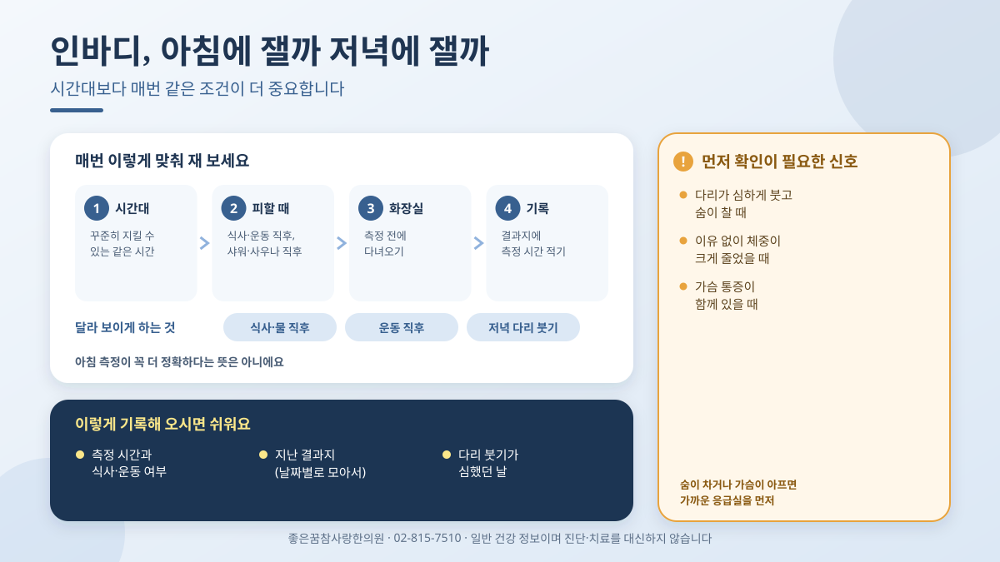
인바디는 아침에 재는 게 좋을까요, 저녁에 재는 게 좋을까요?
인바디는 언제 재는지보다 매번 같은 조건으로 재는 것이 더 중요해, 가능하면 식사 전 비슷한 시간대에 화장실을 다녀온 뒤 재면 결과를 서로 비교하기 쉽습니다.
수정 2026-11-25

당화혈색소 검사를 하는 날 무엇을 준비하면 좋을까요?
당화혈색소는 최근 2~3개월의 평균적인 혈당 흐름을 반영하는 수치라 굶고 올 필요는 대체로 없지만, 복용 중인 약과 이전 검진 결과를 함께 가져오시면 흐름을 이어서 보기 쉽습니다.
수정 2026-11-25

추운 아침마다 혈압이 높게 나올 때 집에서는 어떻게 재고 기록하나요?
겨울 아침에는 혈압이 평소보다 높게 재어지는 분이 있어, 재는 시각과 자세, 복용 중인 약을 먼저 묻고 같은 조건으로 재어 기록하는 방법을 함께 정리합니다.
수정 2026-11-25
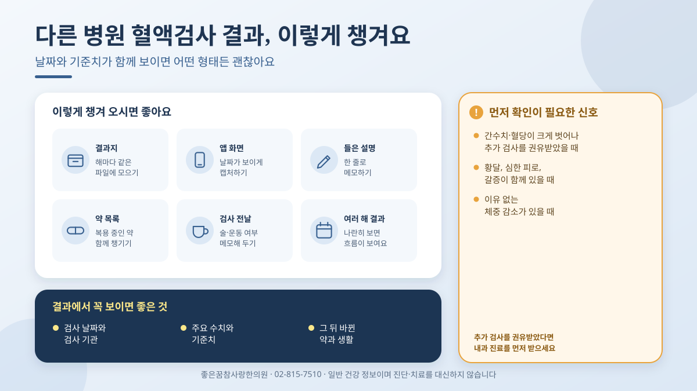
다른 병원 혈액검사 결과는 어떤 형태로 가져가면 좋을까요?
다른 병원이나 검진기관의 혈액검사 결과는 종이 결과지, 휴대폰 앱 화면, 사진 어느 것이든 괜찮고, 검사 날짜와 기준치가 함께 보이게 준비하시면 흐름을 이어서 보기 쉽습니다.
수정 2026-11-25
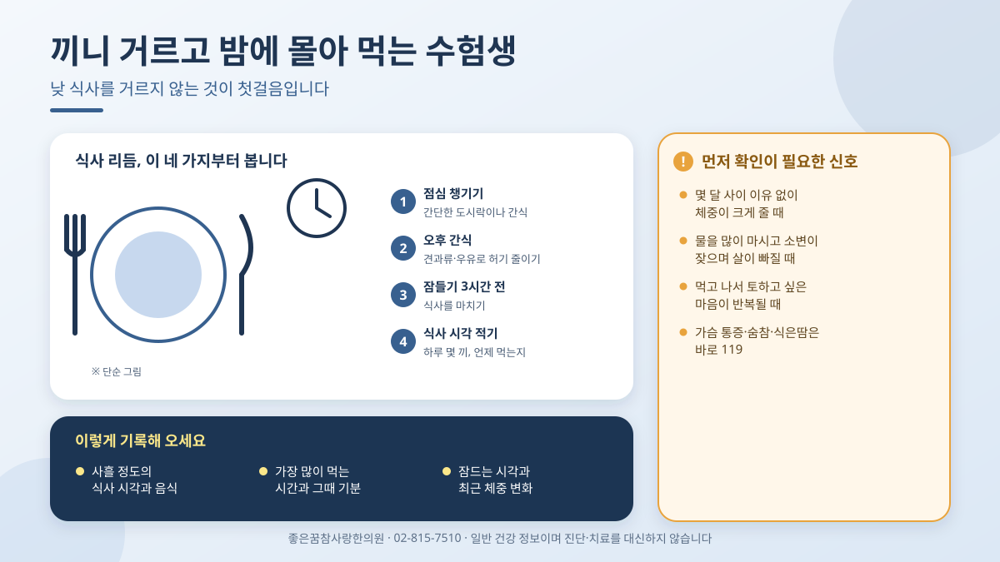
낮에는 끼니를 거르다 밤에 몰아 먹는 수험생은 무엇을 점검하나요?
낮에 끼니를 거르고 밤에 몰아 먹는다면 점심을 간단히라도 챙기고 오후 간식으로 허기를 나누며 잠들기 3시간 전에 식사를 마치는 것부터 시작하고, 체중이 출렁이면 식사와 잠의 리듬을 함께 살핍니다.
수정 2026-11-24
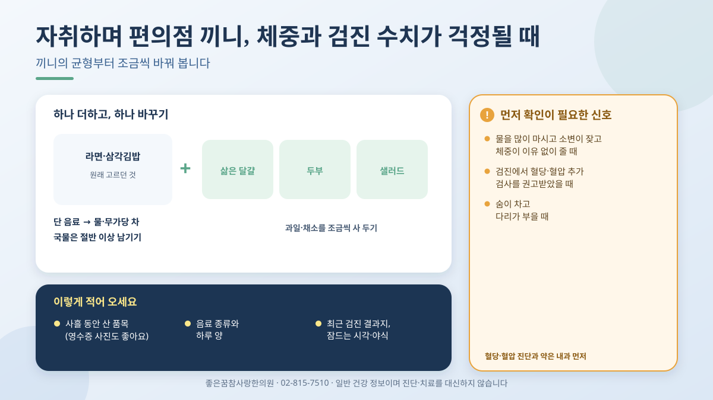
자취하며 편의점 음식으로 끼니를 때우다 체중과 검진 수치가 걱정될 때는 어떻게 살피나요?
혼자 살며 도시락, 라면, 삼각김밥으로 끼니를 해결하면 짠 음식과 단 음료는 늘고 채소와 단백질은 부족해지기 쉬워, 하루 식사 내용과 시간, 검진 결과를 먼저 함께 보고 편의점 안에서도 고를 수 있는 조합을 정리합니다.
수정 2026-11-25
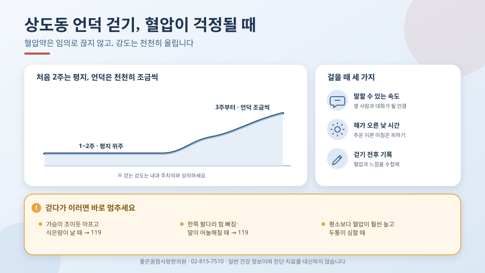
혈압이 높다는 말을 듣고 동네 언덕길 걷기를 시작하려 할 때는 무엇을 먼저 확인하나요?
혈압이 높은 분이 언덕길 걷기를 시작할 때는 걷는 강도와 시간, 복용 중인 약, 걷는 중 불편한 신호를 먼저 확인하고, 평지에서 시작해 몸 상태를 보며 조금씩 늘리는 방법을 함께 정리합니다.
수정 2026-11-25

야근할 때마다 책상 서랍 간식에 자꾸 손이 갈 때는 어떻게 살피나요?
야근할 때마다 서랍 간식에 손이 간다면 야근 예정일에는 오후 6~7시 사이에 간단히라도 저녁을 먹고, 간식은 양을 정하기 쉬운 것으로 바꾸며 손이 갈 때 물 한 잔과 잠깐 걷기부터 해 보시기를 권합니다.
수정 2026-11-25

편의점 도시락·라면으로 끼니를 때우는 날이 많을 때는 무엇부터 바꿔 볼까요?
편의점 도시락과 라면으로 끼니를 때우는 날이 많다면 메뉴를 한 번에 바꾸기보다 라면 국물을 남기고 단백질이나 채소 한 가지를 더하며 단 음료를 물로 바꾸는 것부터 시작하시기를 권합니다.
수정 2026-11-25

중앙대·숭실대 근처 자취방에서 혼자 밥을 해 먹을 때 식사 리듬은 어떻게 잡나요?
자취하며 혼자 밥을 해 먹을 때는 수업이 없는 날에도 첫 끼 시각을 정해 두고, 밥을 한 번에 지어 나눠 얼리며 밤 11시 이후에는 가벼운 것으로 바꾸는 것부터 식사 리듬을 잡아 보시기를 권합니다.
수정 2026-11-25

체중이 더 이상 줄지 않는 정체기에는 무엇을 먼저 점검하나요?
체중 정체기에는 숫자 하나보다 식사 시간과 순서, 잠, 활동량, 스트레스가 처음과 어떻게 달라졌는지를 먼저 점검하고 복용 약과 검진 수치를 함께 확인하며 무리한 절식은 권하지 않습니다.
수정 2026-11-26

인바디에서 체수분이나 부종 항목이 신경 쓰일 때는요?
체수분과 부종 관련 수치는 짠 음식, 오래 서 있거나 앉아 있기, 잠, 생리 주기에 따라 달라질 수 있어, 붓는 시간대와 부위를 먼저 묻고 오래가거나 다른 증상이 있으면 내과 검사를 안내합니다.
수정 2026-11-25

인바디 결과지는 어디부터 보면 되나요?
인바디 결과지는 체중 한 줄보다 체수분·근육량·체지방이 어떻게 이루어져 있는지 보는 표라서, 지난 결과와 비교해 어느 칸이 달라졌는지부터 읽으면 이해가 쉽습니다.
수정 2026-11-25

체중은 정상인데 인바디에서 근육량이 적게 나왔어요
체중이 정상 범위여도 근육량이 적고 체지방 비율이 높게 나올 수 있어, 끼니별 단백질과 하루 활동량, 잠과 피로를 먼저 묻고 생활 속에서 근육을 쓰는 방법부터 함께 찾습니다.
수정 2026-11-25
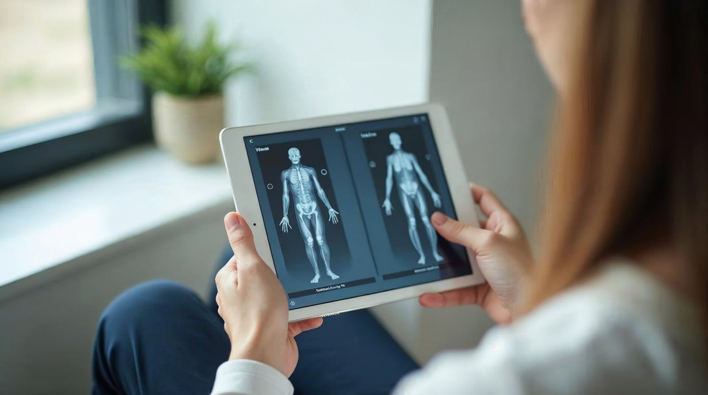
뱃살이 걱정될 때 인바디 기록은 어떻게 활용하나요?
뱃살 걱정은 체중보다 복부 지방과 생활 리듬의 문제인 경우가 많아, 허리둘레와 인바디 기록을 몇 주 간격으로 비교하며 저녁 시각·야식·술·잠·앉아 있는 시간을 함께 점검합니다.
수정 2026-11-25
인바디 검사 전에는 무엇을 준비하면 되나요?
체성분 검사는 몸속 수분 상태에 따라 수치가 달라질 수 있어, 검사 전 식사와 운동·사우나, 화장실, 금속 장신구, 몸속 전자 의료기기와 임신 여부를 먼저 확인합니다.
수정 2026-11-25
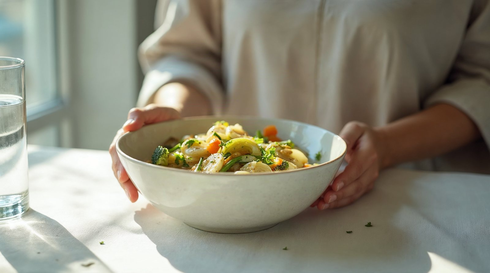
건강검진에서 중성지방이 높다고 했을 때 무엇을 알아두면 좋을까요?
건강검진에서 중성지방이 높게 나오면 검사 전 금식과 전날 음주를 먼저 확인하고 술, 단 음식, 체중, 활동량을 점검하며 재검과 내과 진료를 함께 안내하고 복용 약은 임의로 중단하지 않습니다.
수정 2026-11-26

당화혈색소(HbA1c) 수치는 무엇을 뜻하나요?
당화혈색소는 최근 2~3개월의 평균적인 혈당 흐름을 반영하는 수치라서 하루 혈당보다 생활 리듬의 결과를 보는 참고 자료로 쓰이며, 진단과 약 처방은 내과 진료가 필요합니다.
수정 2026-11-25

피곤함이 오래가면 혈액검사가 필요한가요?
잠과 식사를 챙겨도 피곤함이 몇 주 넘게 이어지거나 체중 감소·숨참·어지럼·심한 추위 타기가 함께 있다면, 생활 리듬을 살피면서 혈액검사로 빈혈·갑상선·혈당 같은 원인이 없는지 한 번 확인해 보시길 권합니다. 숨이 차서 쓰러질 것 같거나 가슴 통증이 있으면 가까운 응급실을 먼저 찾으세요.
수정 2026-11-25

운전하는 직업으로 차 안 간식과 불규칙한 끼니가 반복될 때는 어떻게 조절하나요?
운전 중 졸음을 쫓으려 단 음료와 간식을 자주 먹고 끼니가 불규칙해지면 체중과 혈당 관리가 어려워질 수 있어, 간식의 종류와 식사 시각부터 함께 살핍니다.
수정 2026-11-24
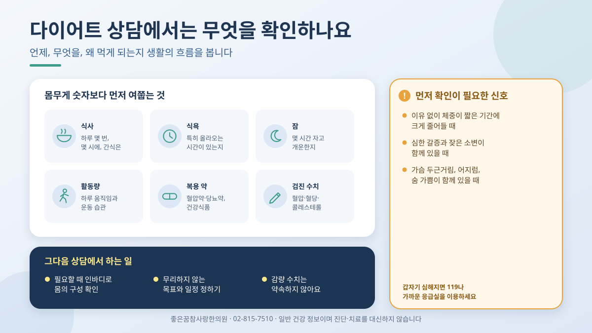
다이어트 상담에서는 무엇을 확인하나요?
다이어트 상담에서는 체중 숫자보다 식사 패턴, 식욕, 잠, 활동량, 복용 중인 약과 검진 수치를 함께 확인하고, 필요하다고 판단될 때 인바디로 몸의 구성을 살핀 뒤 무리하지 않는 목표를 정합니다.
수정 2026-11-24
콜레스테롤과 중성지방 수치가 높게 나오면 생활에서 무엇부터 보나요?
먼저 검사 전날의 식사·술과 공복 시간을 확인하고, 일주일의 술자리·저녁 식사·간식·걷는 시간과 가족력을 차례로 살핍니다. 약이 필요한지는 내과에서 판단하며, 가슴이 조이듯 아프거나 한쪽 팔다리에 힘이 빠지면 바로 가까운 응급실로 가세요.
수정 2026-11-25

공복혈당이 경계 수준이라고 들었을 때 생활에서 무엇을 살펴보나요?
공복혈당이 경계 수준이라는 안내를 받으면 식사 시간과 순서, 단 음료, 활동량, 체중, 잠을 먼저 점검하고 정기 재검과 내과 진료를 함께 챙기며, 갈증과 소변량 증가가 있으면 병원 진료를 먼저 권합니다.
수정 2026-11-26

건강검진 혈액검사 결과지를 가져가면 무엇을 같이 보나요?
혈액검사 결과지에는 간 기능, 지질, 혈당, 신장 기능, 빈혈 수치 등 여러 항목이 있어, 지난해와 달라진 항목과 지금의 생활·증상을 함께 보고 진단이나 약이 필요해 보이면 해당 진료과를 안내합니다.
수정 2026-11-25
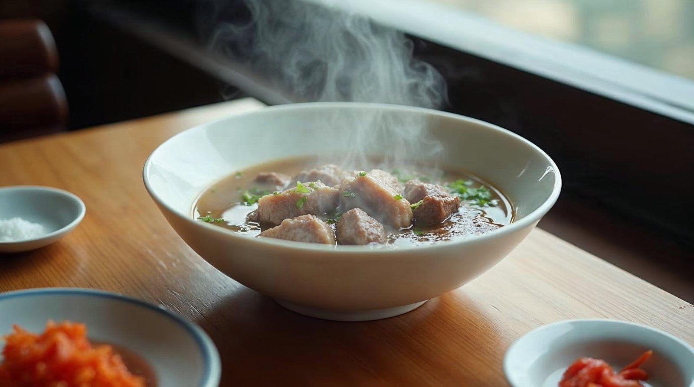
짠 음식과 국물을 좋아하는 습관은 혈압과 어떤 관련이 있나요?
짠 음식과 국물, 가공식품을 자주 먹는 습관은 혈압과 관련될 수 있어 식사 모습을 일상의 말로 묻고 국물 남기기와 양념 줄이기 같은 현실적인 방법을 안내하며 혈압약은 임의로 중단하지 않습니다.
수정 2026-11-26
건강검진 결과지에서 대사증후군은 어떤 항목을 보나요?
대사증후군은 허리둘레, 혈압, 공복혈당, 중성지방, HDL 콜레스테롤 다섯 가지 가운데 세 가지 이상이 기준을 벗어난 상태이며 기준은 지침에 따라 다를 수 있어 검진 결과지의 안내와 의사의 설명을 우선합니다.
수정 2026-11-26

당뇨 전단계라고 들었을 때 식사 순서와 간식은 어떻게 살피나요?
당뇨 전단계라는 안내를 받으면 식사 시간과 순서, 단 음료와 간식, 활동량을 일상의 말로 묻고 채소를 먼저 먹는 식사 순서와 식후 걷기 같은 현실적인 방법을 안내하며 정기 재검과 내과 진료를 함께 권합니다.
수정 2026-11-26

체중은 보통인데 복부 지방이 걱정될 때는 어떤 검진을 보나요?
체중이 정상이어도 배 둘레와 근육량, 혈당과 지질 수치가 기준을 넘을 수 있어, 검진 결과지의 허리둘레와 혈압·혈당·지질 항목을 함께 확인해 보도록 안내합니다.
수정 2026-11-24
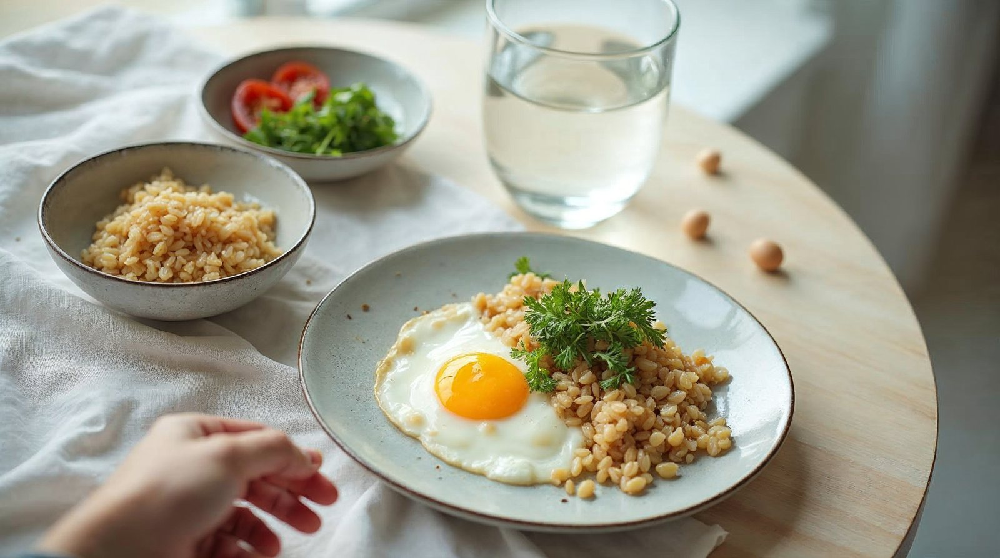
혈압약·당뇨약을 먹고 있다면 다이어트 상담 전에 무엇을 알려야 하나요?
복용 중인 혈압약·당뇨약·콜레스테롤 약은 임의로 중단하지 말고 이름과 용량을 모두 알려 주세요. 최근 건강검진 결과와 약 목록을 가져오시면 생활 리듬과 함께 안전하게 살필 수 있습니다.
수정 2026-11-25

야식을 끊기 어려울 때는 어떤 점을 먼저 살펴보나요?
야식을 끊기 어려울 때는 의지만 탓하기보다 저녁 식사 시간과 양, 잠드는 시각, 진짜 허기와 스트레스성 허기의 구분을 먼저 살피고 생활 리듬을 조금씩 조정합니다.
수정 2026-11-26

물은 하루에 얼마나 마셔야 하나요? 대사 관리 관점에서
물은 하루 동안 나누어 충분히 마시는 것이 기본이며, 필요한 양은 활동량과 날씨, 신장·심장 질환, 복용 약에 따라 달라 정해진 양을 무리하게 채우기보다 몸 상태에 맞춰 조절합니다.
수정 2026-11-24

명절 음식을 과식하지 않으려면 어떻게 하면 좋을까요?
명절과 모임 음식은 먹고 싶은 음식과 술의 양을 미리 정하고 채소와 단백질을 먼저 먹으면 부담을 줄일 수 있으며, 다음 날은 굶기보다 평소 식사로 돌아가는 것이 중요합니다.
수정 2026-11-25
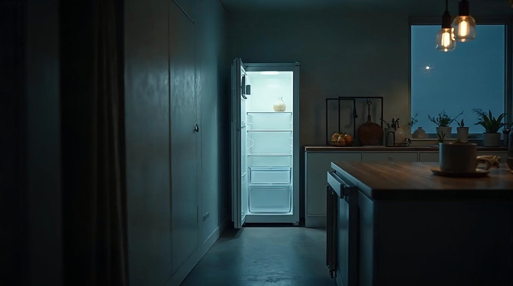
먹고 나서 자책이 들 때는 어떻게 마음을 살펴야 하나요?
먹고 나서 자책과 후회가 반복될 때는 자신을 탓하기보다 언제 어떤 마음일 때 먹게 되는지를 살피고 끼니를 규칙적으로 챙기며 폭식과 구토가 반복되거나 우울감이 깊으면 정신건강의학과 진료를 권합니다.
수정 2026-11-26
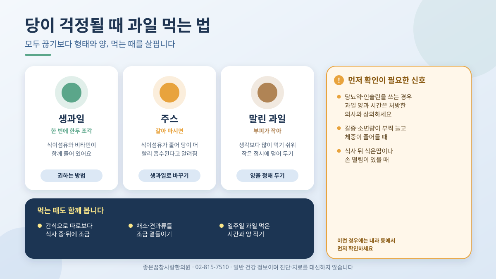
과일은 먹어도 되나요? 당이 걱정될 때 과일 먹는 법
과일에는 당이 들어 있지만 주스 대신 생과일로, 한 번에 한두 조각씩 식사의 일부로 먹으면 무리 없이 즐길 수 있으며, 당뇨약을 드시는 분은 과일 양과 시간을 처방한 의사와 상의합니다.
수정 2026-11-25
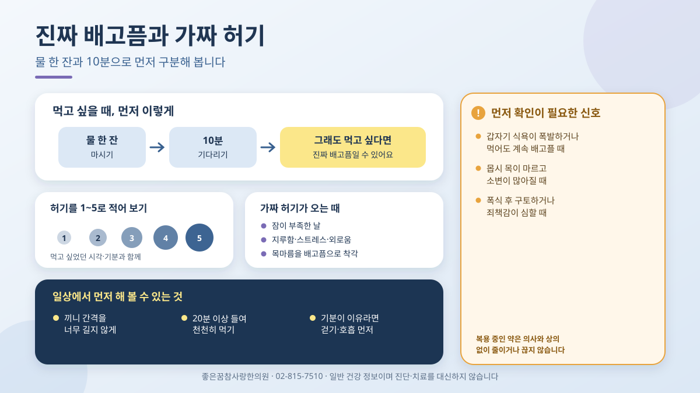
진짜 배고픔과 가짜 허기는 어떻게 구분해서 살피나요?
진짜 배고픔은 서서히 오고 무엇이든 먹을 수 있지만, 가짜 허기는 갑자기 오고 특정 음식이 당기는 경우가 많아, 먹고 싶은 순간의 상황과 감정을 함께 살펴보도록 안내합니다.
수정 2026-11-24
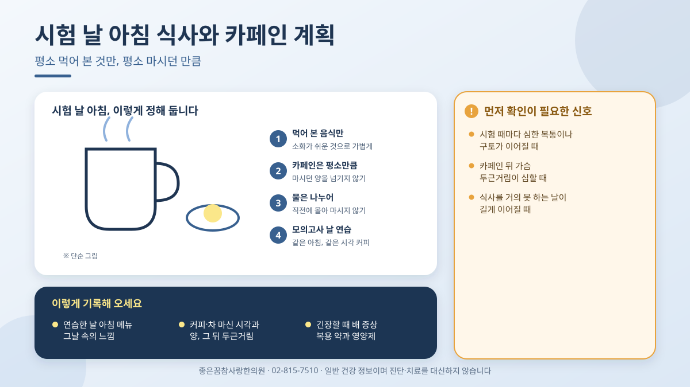
시험 당일 아침 식사와 카페인은 어떻게 계획하면 되나요?
시험 당일 아침에는 평소 먹어 본 가벼운 식사와 평소 마시던 정도의 카페인으로 속을 편하게 두는 것이 기본이며, 새로운 음식이나 음료는 피하도록 안내합니다.
수정 2026-11-25

물을 마셔도 갈증이 계속될 때는 어떻게 하나요?
물을 자주 마셔도 갈증이 가시지 않고 소변이 늘면 혈당 문제를 먼저 확인하도록 병원 검사를 권하며, 한의원에서는 식사와 땀, 생활 습관을 함께 살핍니다.
수정 2026-11-24
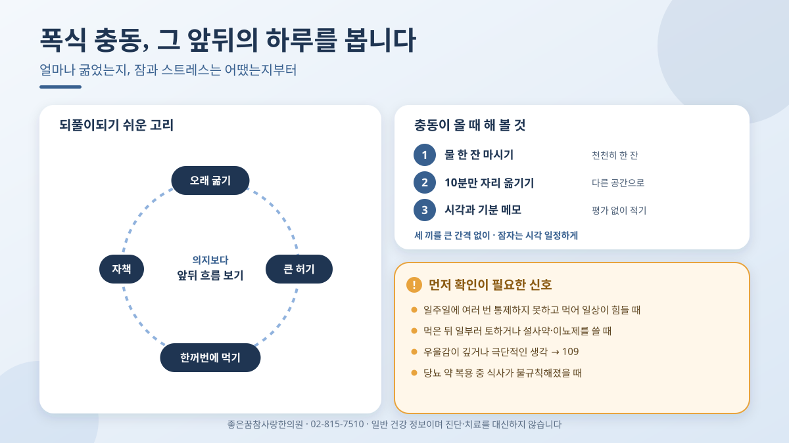
폭식 충동이 올 때는 어떤 점을 먼저 살펴보나요?
갑자기 한꺼번에 먹게 되는 폭식 충동은 의지만의 문제로 보기 어려워서, 굶은 시간과 수면, 스트레스, 식사 간격을 먼저 묻고 생활 리듬과 함께 살핍니다.
수정 2026-11-24
자주 묻는 질문
혈압약이나 당뇨약을 한의원 진료로 대신할 수 있나요?
아니요. 복용 중인 약은 임의로 중단하거나 줄이지 마시고, 처방한 의사와 상의해야 합니다. 한의원에서는 복용 중인 약을 모두 확인한 뒤 생활 관리와 필요한 진료를 함께 살핍니다.
체중만 줄이는 진료인가요?
체중 숫자만 보지 않습니다. 잠, 식사 시간과 순서, 소화, 대변, 활동량 같은 생활의 리듬을 함께 살피고 변화를 기록해 이어서 확인합니다.
처음 갈 때 무엇을 가져가야 하나요?
최근 건강검진 결과와 복용 중인 약 목록 또는 처방전을 가져오시면 상담에 도움이 됩니다.
수치가 많이 높으면 한의원에 먼저 가도 되나요?
수치가 매우 높거나 가슴 통증, 심한 두통, 시야 이상 같은 증상이 있으면 먼저 내과 등 의료기관에서 진료받으시기를 권합니다. 필요하면 다른 의료기관 진료를 안내합니다.
예약·오시는 길
주소
서울 동작구 만양로2길 2 신성빌딩 3층·5층 (상도동)
진료시간
평일 09:30~20:00 (점심시간 13:00~14:00) 토요일·일요일·공휴일 09:30~15:00 (점심시간 없음)
진료시간은 공개된 안내 기준입니다. 방문 전 전화로 확인해 주세요.